LG: 키패드 형태 확인, 세로선 잔존. iPhone 6s: 원형 키패드 복원. Galaxy111.9 MHz: P8에서 화면 내용 식별 어려움.
위상 HSV는 실제 화면 색상이 아닙니다. 결과 상관은 혼합 신호의 반복성이며 복원 정확도나 SNR이 아닙니다.
수치·방법·실패 분석 보고서 · 전체 수치 JSON · 테스트 결과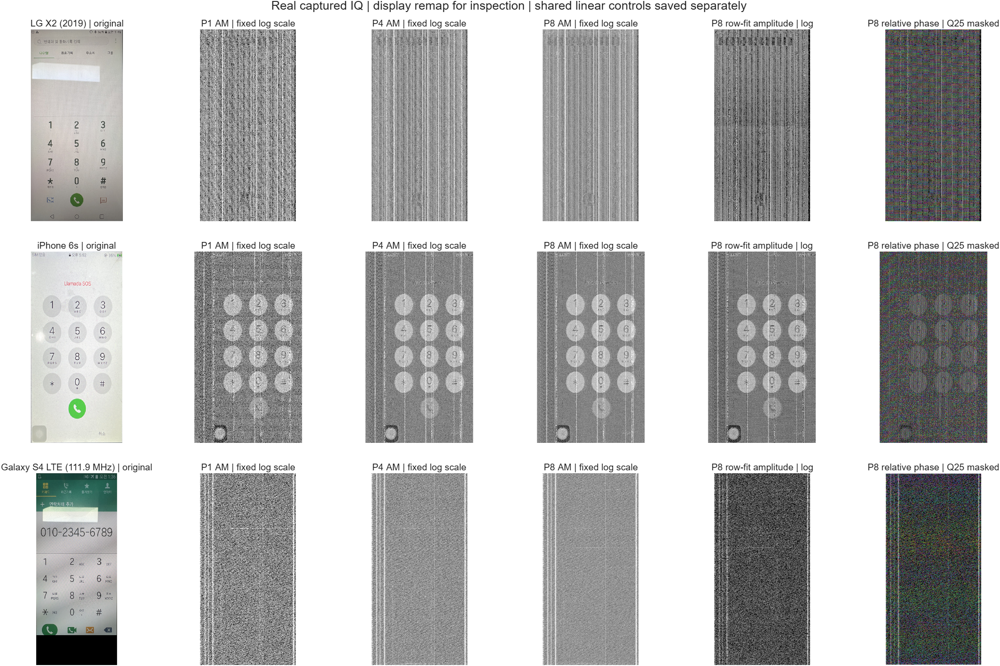
개요는 고정 log 표시. 아래 기기별 비교는 공통 선형 진폭 scale입니다.
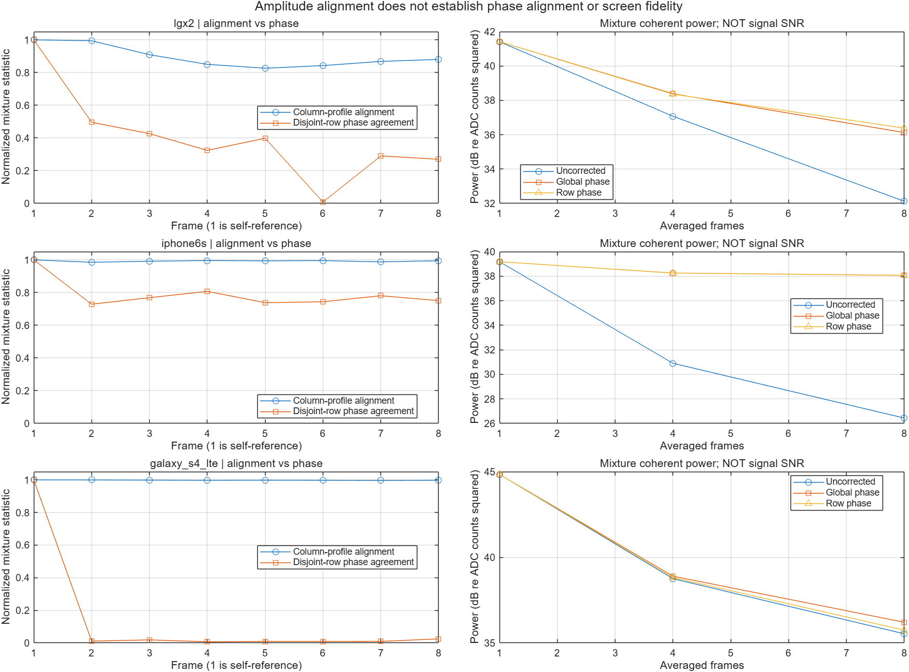
P1 · P4 · P8 · 프레임 위상·정렬 수치 · 열 위상 수치 · 처리 수치·설정
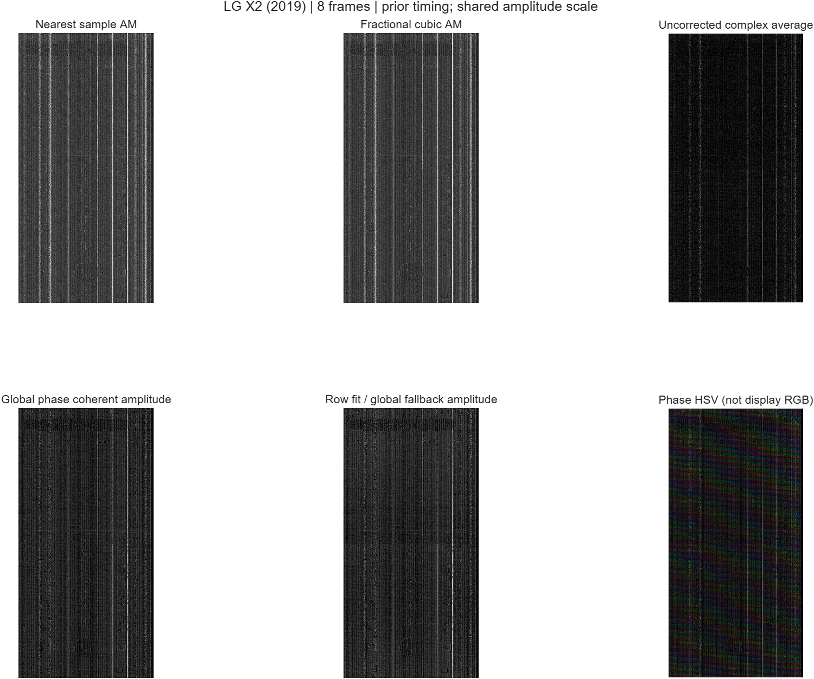
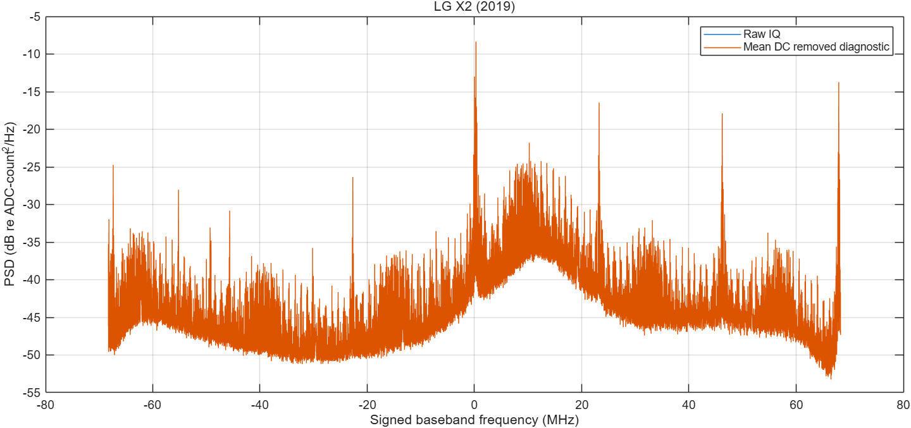
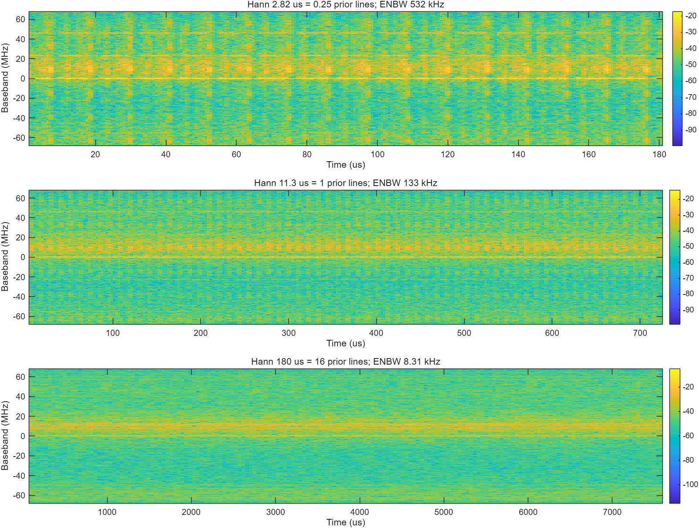
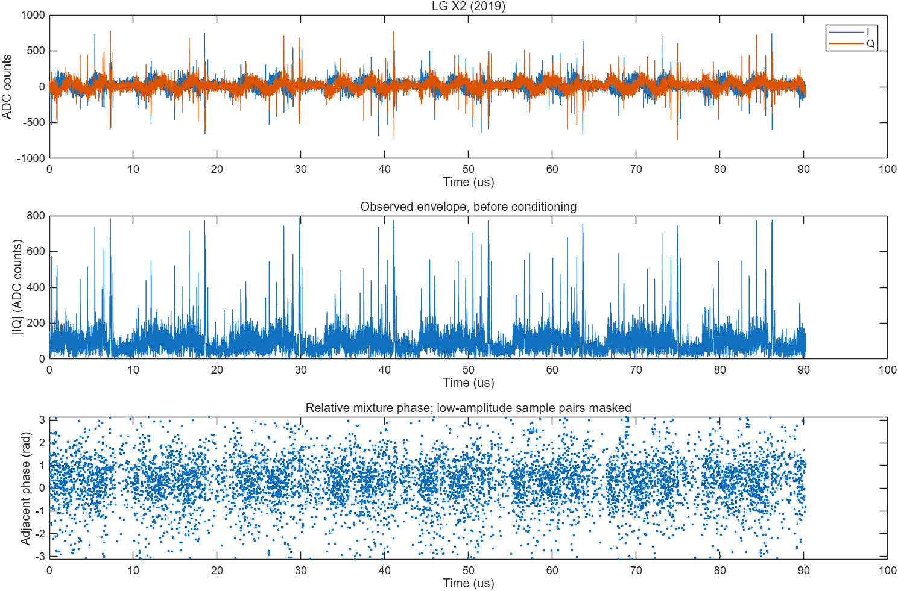
P1 · P4 · P8 · 프레임 위상·정렬 수치 · 열 위상 수치 · 처리 수치·설정
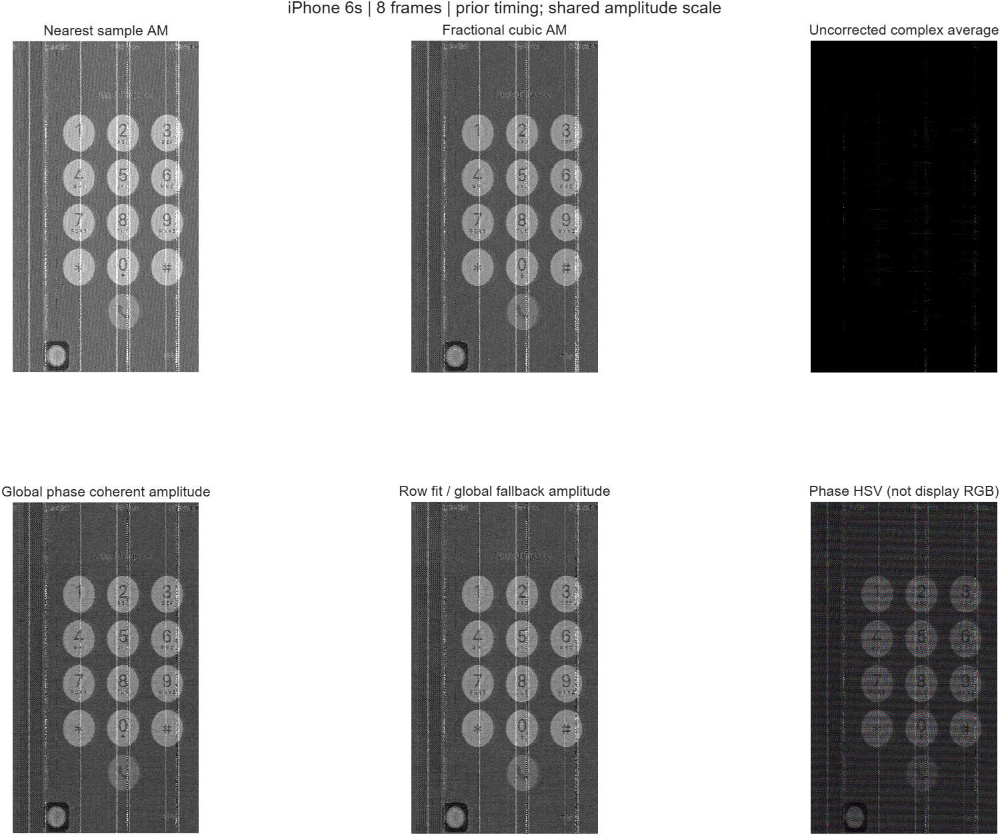
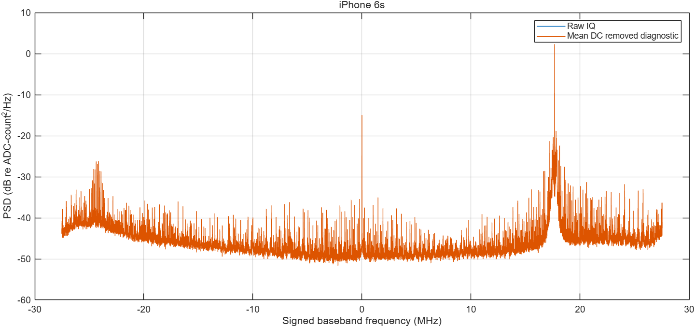
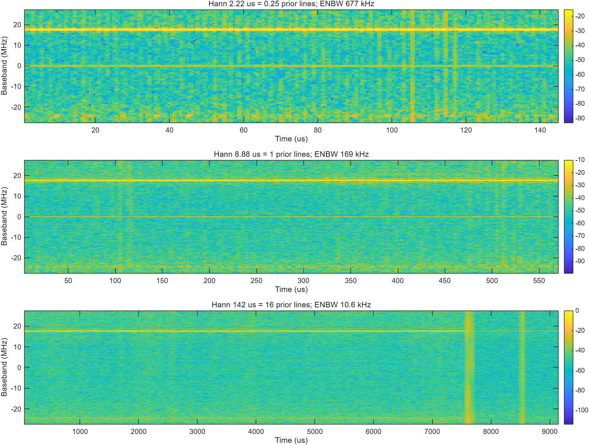
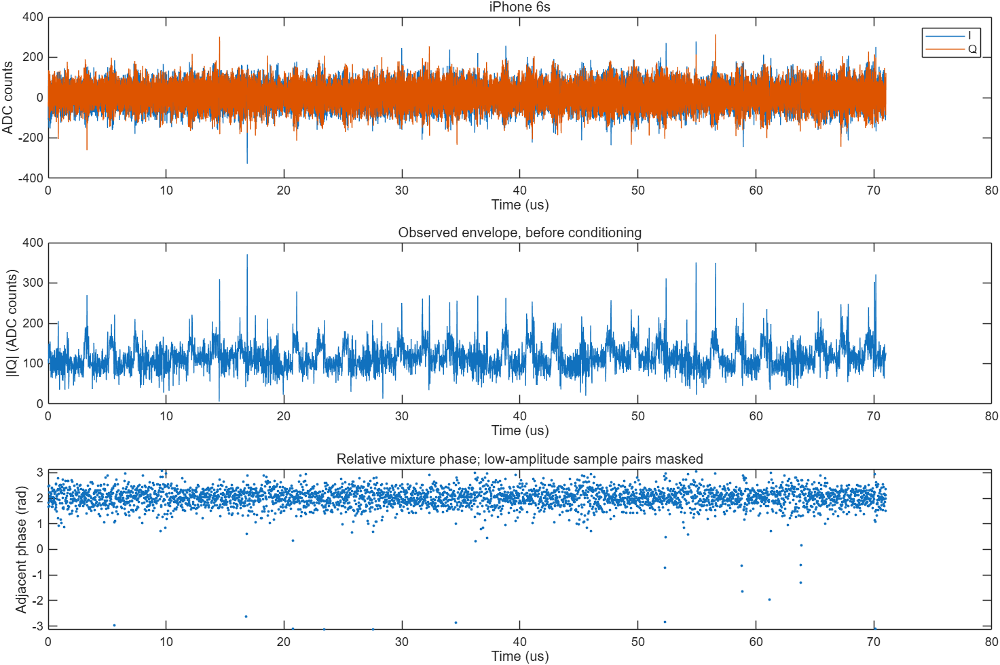
P1 · P4 · P8 · 프레임 위상·정렬 수치 · 열 위상 수치 · 처리 수치·설정
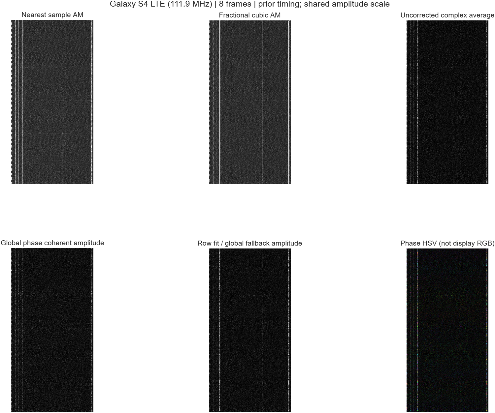
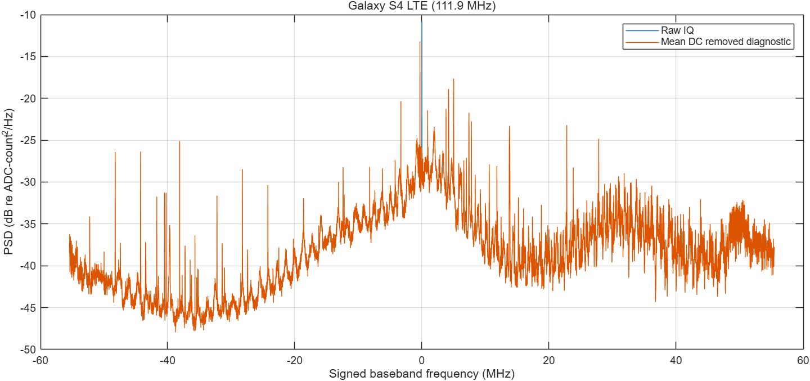
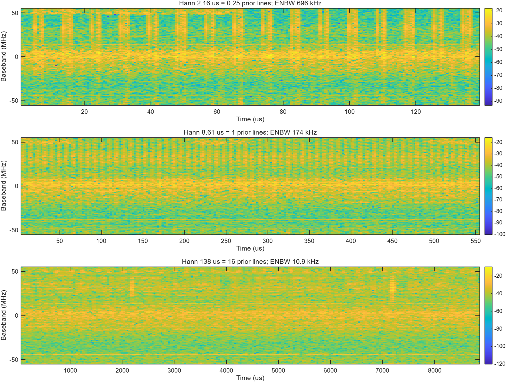
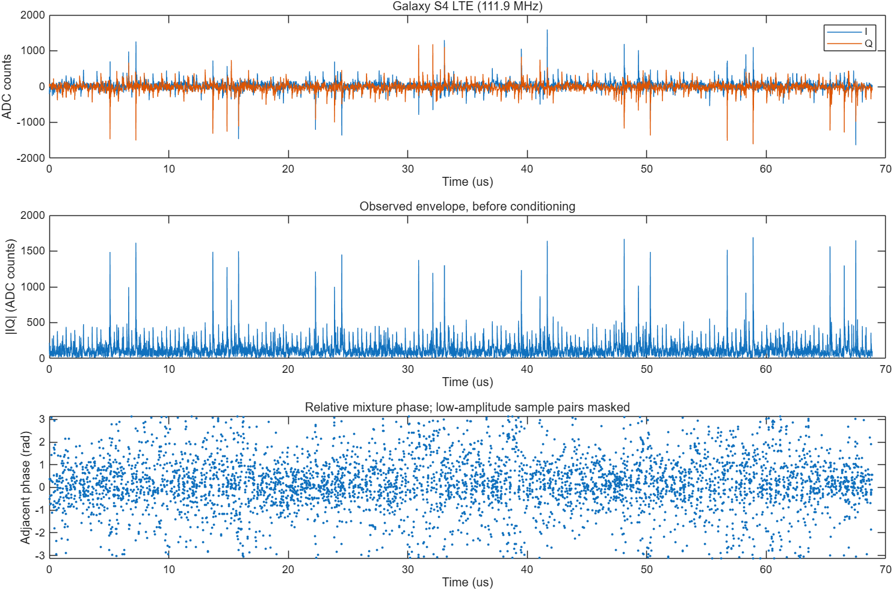
스마트폰 측정의 SNR로 해석하지 않습니다.
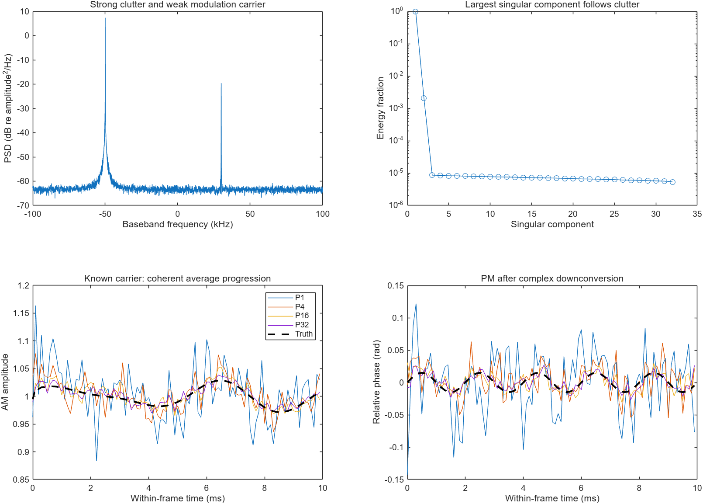